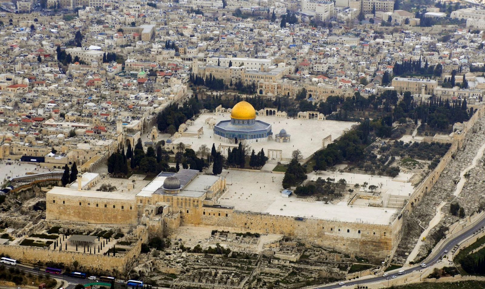
מתוך מצגת ירושלים של המגמהחבל ירושלים · נושא 2
כ־4,000 שנה של היסטוריה בעיר אחת. כל שלטון השאיר אחריו אתר שאפשר לבקר בו היום: מנהרה, חומה, רחוב, כנסייה, מסגד או מוזיאון. בנושא הזה נלמד לחבר בין תקופה לאתר, ובין האתר לתייר שמגיע אליו.
סרגל הזמן
בירושלים כל תקופה נבנתה על גבי הקודמת. לכן התייר פוגש את ההיסטוריה גם מתחת לאדמה, בחפירות ובמנהרות, וגם מעליה, בחומות, בכנסיות ובמסגדים. בבגרות שואלים על אתרים: מה רואים בהם ולמה הם חשובים. הסרגל עוזר לדעת לאיזה סיפור שייך כל אתר.
לפי "סרגל זמן" בסיכום החבל (כהן, תיירות בישראל, 2006).
לפני כ־4,000 שנה · כ־1005 לפנה״ס
ירושלים הקדומה ישבה על רכס צר מדרום להר הבית, ליד מעיין הגיחון. שלטו בה היבוסים, והיא מוזכרת כבר בכתבים מצריים. בסביבות שנת 1005 לפנה״ס כבש דוד המלך את העיר והפך אותה לבירתו. מכאן השם "עיר דוד".
"מגדל דוד" ליד שער יפו לא נבנה בימי דוד. זו מצודה שנבנתה ושופצה בתקופות מאוחרות בהרבה, והצריח שלה עות'מאני. נפגוש אותו בתקופה העות'מאנית.
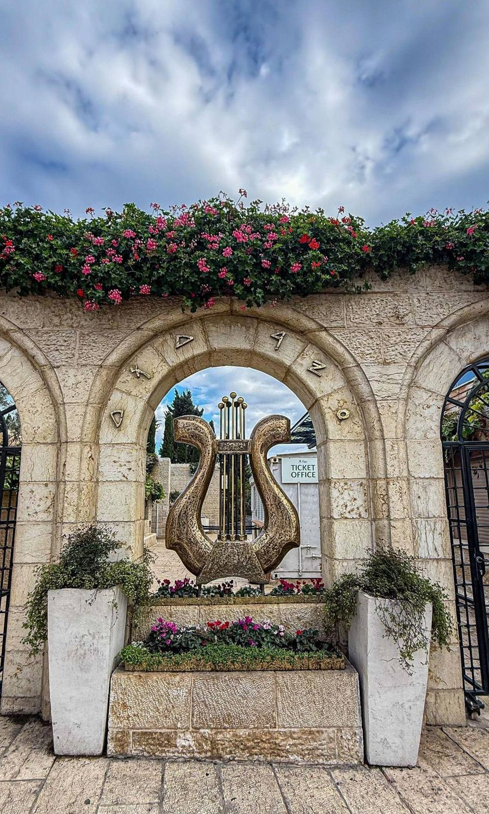
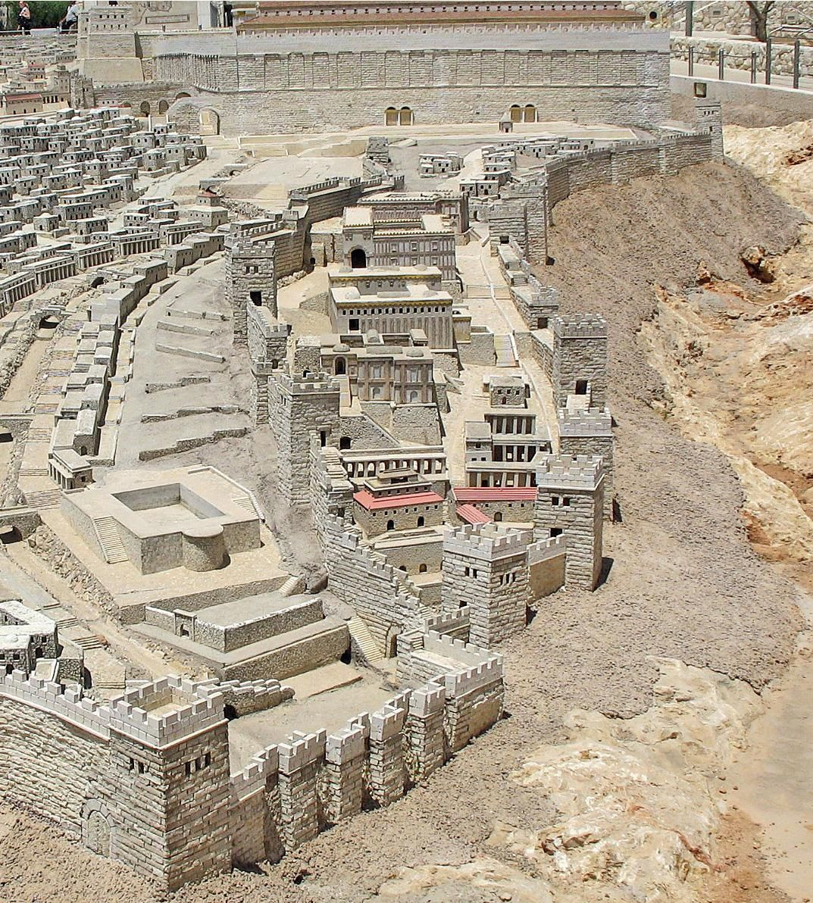
עד 586 לפנה״ס · תקופת בית ראשון
שלמה בנה את בית המקדש הראשון. אחריו, רחבעם בנו הפך את ירושלים לבירת ממלכת יהודה. במאה ה־8 לפנה״ס התכונן המלך חזקיהו למצור של סנחריב מלך אשור, ובנה שני מפעלים שאפשר לראות עד היום. בשנת 586 לפנה״ס החריבו הבבלים את העיר ואת המקדש.
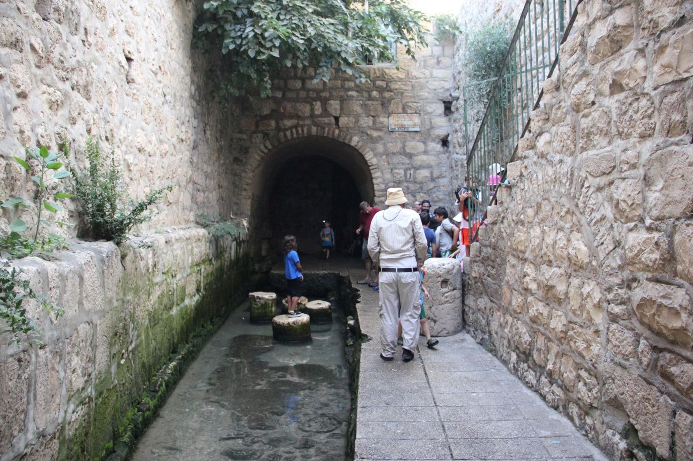
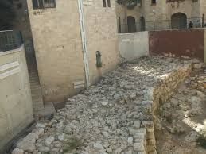
עד 70 לספירה · תקופת בית שני
אחרי שיבת ציון נבנה המקדש מחדש. בהמשך שלטו בעיר השליטים היווניים, ואחריהם החשמונאים. הורדוס הרחיב את הר הבית ובנה סביבו קירות תמך ענקיים. בשנת 70 לספירה, בסוף המרד הגדול, החריבו הרומאים את העיר ואת המקדש.
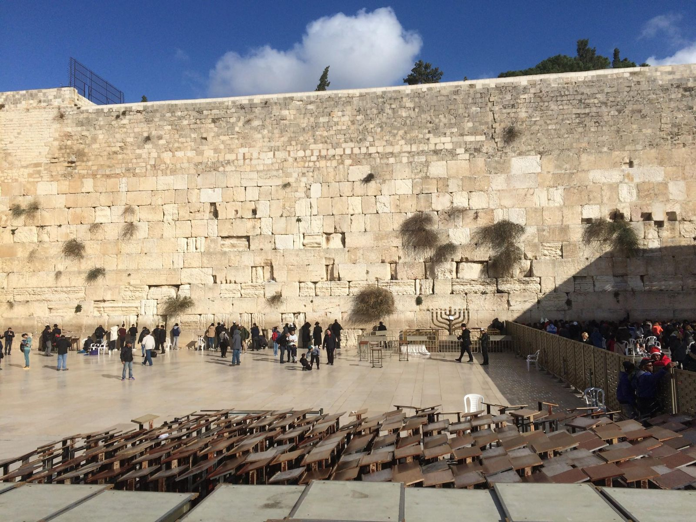
קיר התמך המערבי של הר הבית שבנה הורדוס. השריד הקרוב ביותר למקדש, והמקום המקודש ביותר ליהודים לתפילה. ממשיכים אותו מתחת לאדמה במנהרות הכותל.
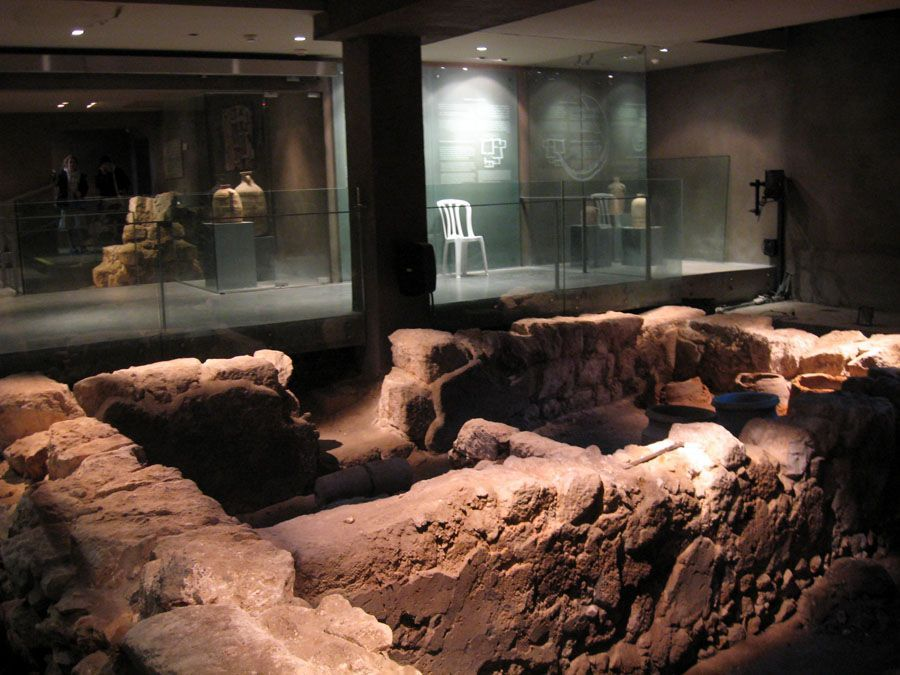
בית של משפחת כוהנים, ככל הנראה משפחת קתרוס, שנשרף בחורבן. שכבת אפר, כלים ומטבעות מימי המרד הגדול מראים שנשרף בשנת 70. היום יש בו מייצג אור־קולי.
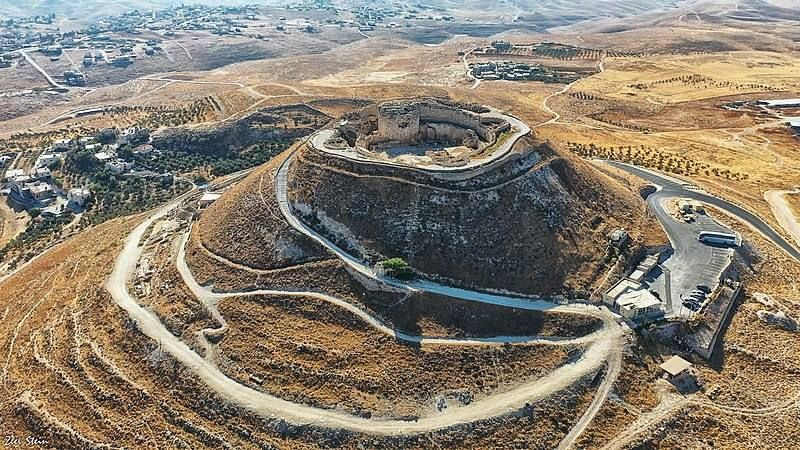
הר שהורדוס עיצב, ועליו ארמון ומבצר, ליד בית לחם. מבקרים בארמון, במנהרות מימי מרד בר כוכבא, ובקבר שזוהה כקבר הורדוס.
קשת רובינסון וקשת וילסון: שרידים של המעברים שהובילו אל הר הבית בימי בית שני.
מנהרות הכותל: נחשפו אחרי 1967. כוללות תעלת מים מימי החשמונאים, אולמות וקטע רחוב מימי בית שני.
קבר בני חזיר בעמק קדרון: קבר של משפחת כוהנים, עם כתובת בעברית.
התמונות: מתוך מצגת ירושלים של המגמה · הרודיון: מצגת התמונות הרשמית.
70 – 638 לספירה · התקופה הרומית והביזנטית
אחרי החורבן הקימו הרומאים על חורבות ירושלים עיר רומית בשם איליה קפיטולינההרחבה: בימי הקיסר אדריאנוס, בתקופת מרד בר כוכבא (132–135), ויהודים לא הורשו לגור בה. בתקופה הביזנטית הפכה הנצרות לדת האימפריה, ובעיר נבנו כנסיות גדולות.
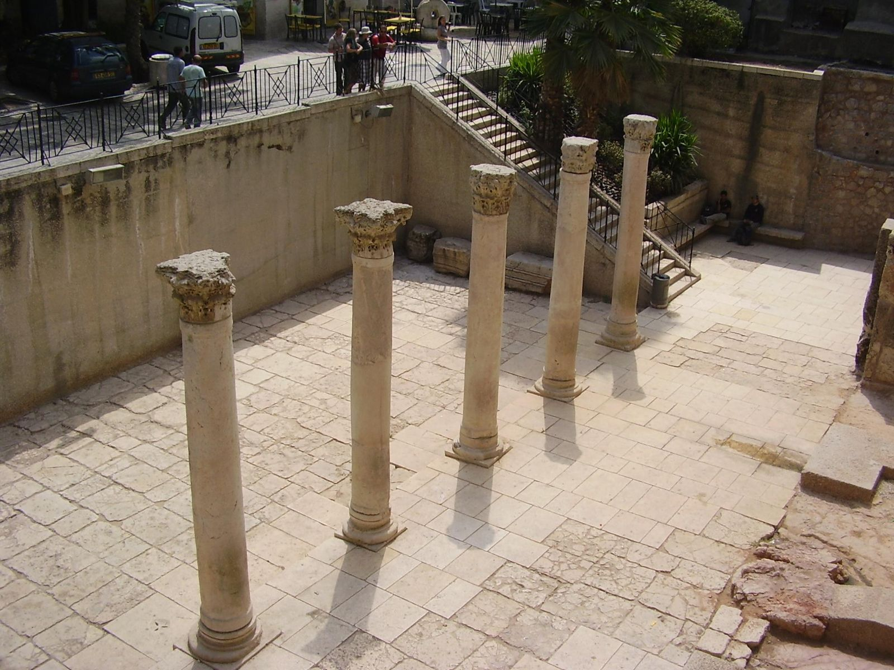
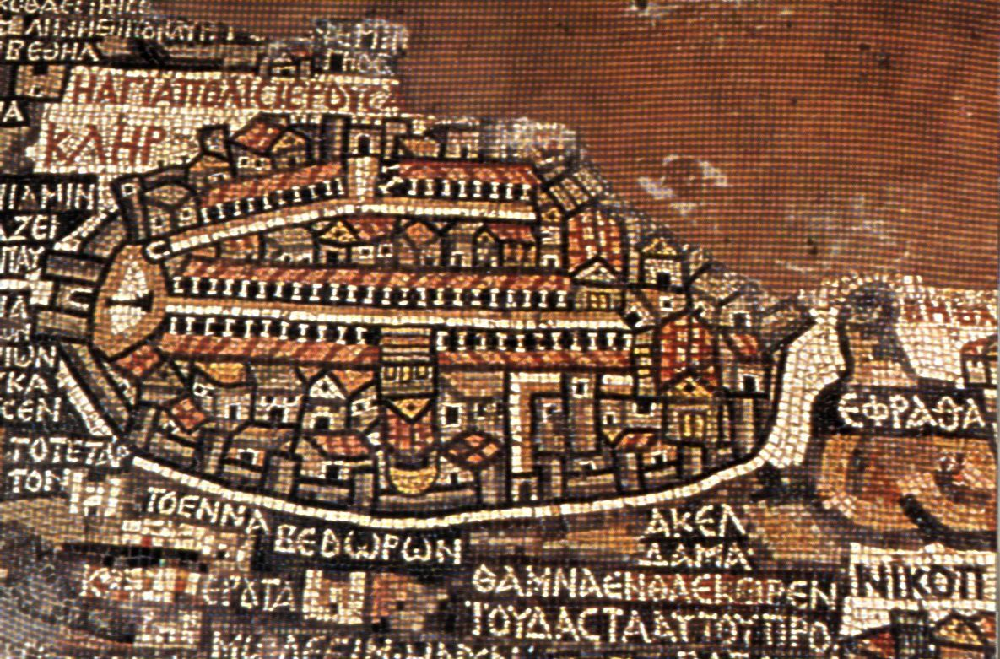
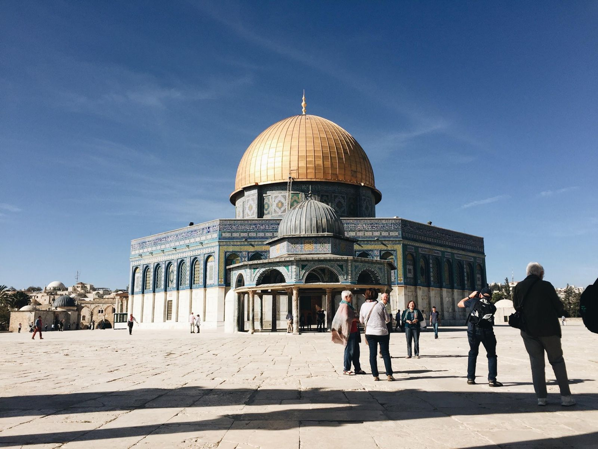
כיפת הסלע · מתוך מצגת ירושלים של המגמה638 – 1099 · הכיבוש המוסלמי
בשנת 638 כבשו המוסלמים את ירושלים. על הר הבית הם בנו את כיפת הסלעהרחבה: הושלמה בשנת 691 ואת מסגד אל־אקצא. לפי המסורת המוסלמית, משם עלה מוחמד לשמיים במסע הלילה.
היהודים, שלא הורשו לגור בעיר בתקופה הנוצרית, קיבלו רשות לחזור, וחיו בה עד בוא הצלבנים. היום הר הבית הוא מוקד הצליינות המוסלמית בישראל.
מ־1099 · צלבנים, ואחריהם ממלוכים
בשנת 1099 כבשו הצלבנים את ירושלים והפכו אותה לבירת ממלכתם. היהודים נרדפו ונאסר עליהם לגור בעיר. אחרי הצלבנים חזר השלטון המוסלמי, ובהמשך שלטו בעיר הממלוכים, שהשאירו שווקים ומבנים מפוארים ברובע המוסלמי.
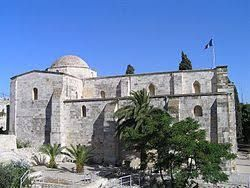
צלבניםכנסייה צלבנית ליד שער האריות. לפי המסורת הנוצרית, כאן נולדה מרים.
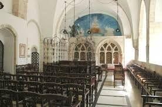
ממלוכים · 1267הרמב״ן הגיע מספרד ב־1267, בימי הממלוכים, כדי לשקם את החיים היהודיים בעיר. לפי המסורת הוא הניח את היסוד לבית הכנסת. היום הוא פעיל ברובע היהודי.
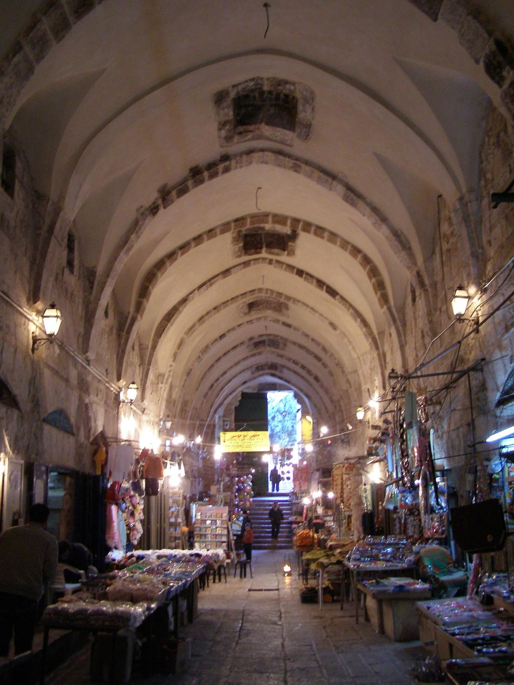
ממלוכים · 1336שווקים מקורים ברובע המוסלמי. שוק הכותנה נבנה ב־1336 כדי לרכז את סוחרי הכותנה והאריגים, ומוביל אל הר הבית.
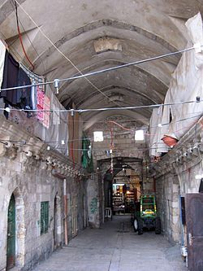
ממלוכים · 1386פונדק דרכים בן שתי קומות לסוחרים ולגמליהם, ליד רחוב השלשלת.
מחוץ לעיר: כנסיית תחיית המתים באבו גוש, כנסייה צלבנית מהמאה ה־12.
סנט אנה, הרמב״ן וחאן אל־סולטן: מתוך השידור "ירושלים העיר העתיקה", מערכת השידורים הלאומית · השוק: מתוך מצגת ירושלים של המגמה.
1517 – 1917 · התקופה העות'מאנית
בשנת 1517 כבשו הטורקים העות'מאנים את הארץ. הסולטן סולימאן המפואר בנה את חומות העיר העתיקה בין 1535 ל־1542. החומה מקיפה את ארבעת הרבעים, וכיום יש בה שמונה שערים: שבעה פתוחים, ושער הרחמים אטום.
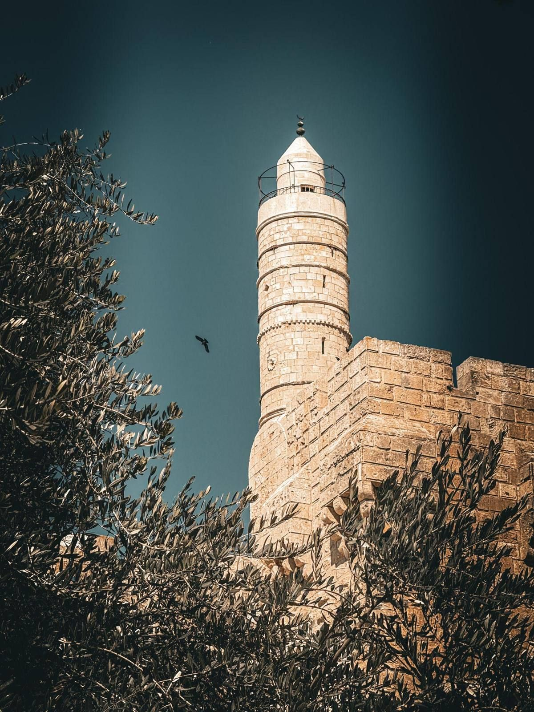
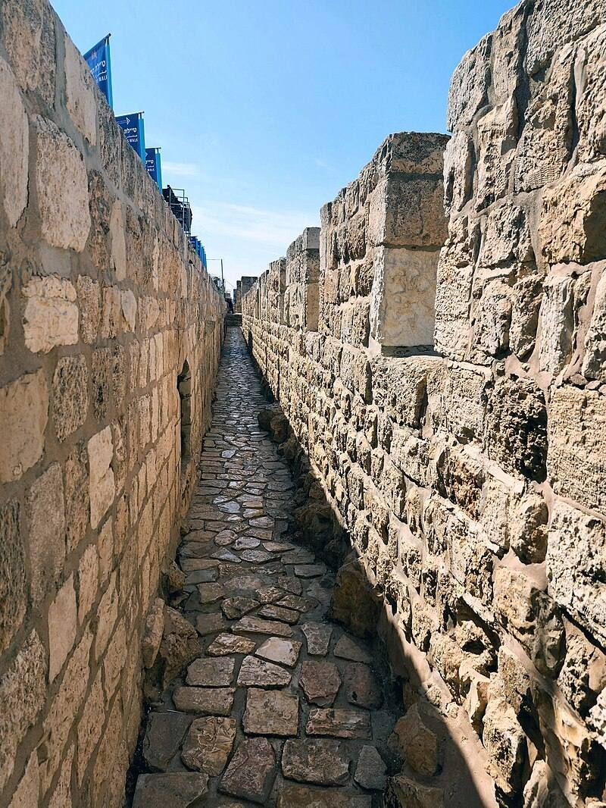
את השערים, ואת האירועים ההיסטוריים שקרו בכל אחד, נלמד לעומק בנושא 3.
המאה ה־19 · סוף התקופה העות'מאנית
במאה ה־19 העיר העתיקה הייתה צפופה, ותושבים התחילו לבנות שכונות מחוץ לחומות. גם מעצמות אירופה וכנסיות בנו מבנים גדולים מחוץ לעיר, בעיקר בשביל צליינים.
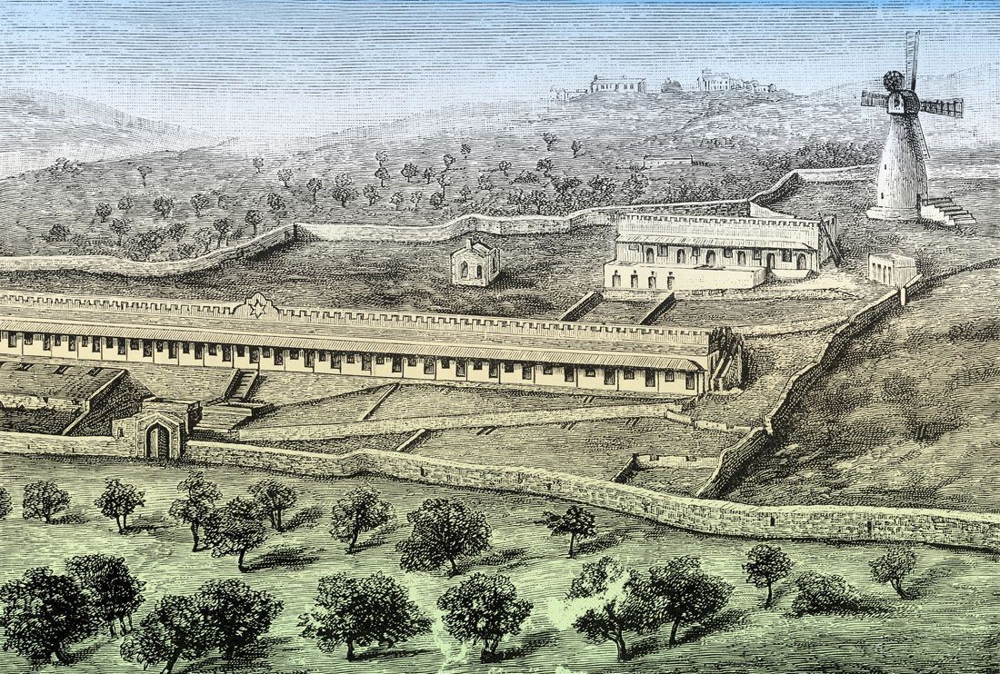
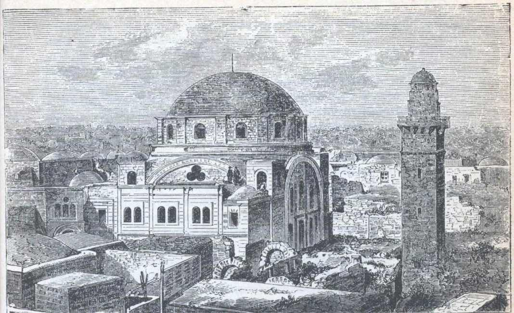
את שכונות האבות נלמד לעומק בנושא 6, ירושלים החדשה.
1917 – 1948 · המנדט הבריטי
בדצמבר 1917 כבשו הבריטים את העיר מידי הטורקים, והגנרל אלנבי נכנס אליה דרך שער יפו. ירושלים הפכה למרכז השלטון הבריטי, ונבנו בה תשתיות מודרניות: מים, חשמל ותחבורה. מהתקופה הזאת נשארו כמה מהאתרים המוכרים בעיר החדשה:
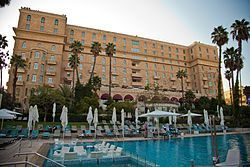
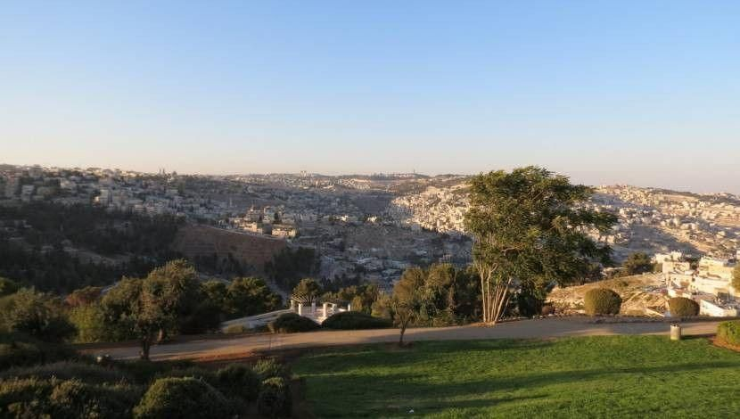
1948 – 1967 · העיר המחולקת
במלחמת העצמאות, אחרי מצור ארוך, נפל הרובע היהודי בעיר העתיקה. לוחמים פרצו אליו דרך שער ציון, אבל לא הצליחו להחזיק בו. בתי כנסת כמו החורבה ותפארת ישראל נהרסו.
אחרי המלחמה העיר חולקה: מערבה בשליטת ישראל, ומזרחה, עם העיר העתיקה, בשליטת ירדן. במשך 19 שנה יהודים לא יכלו להגיע לכותל.
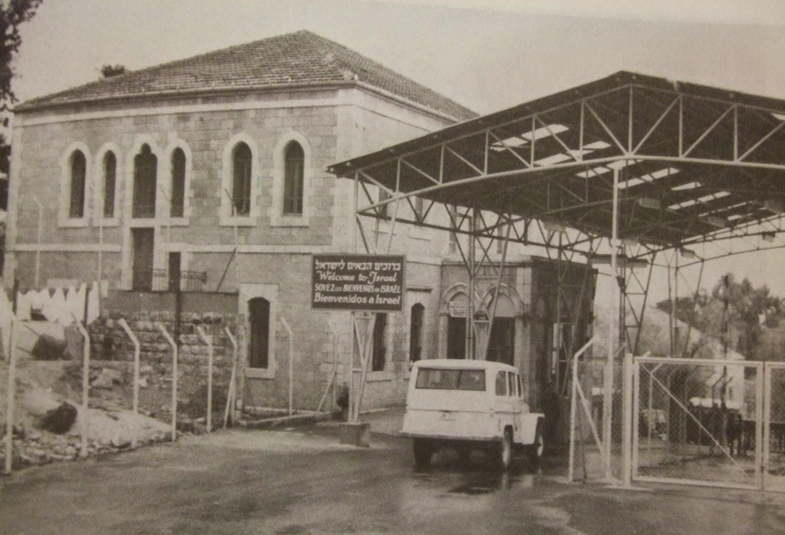
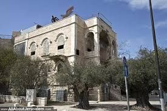
1967 ואילך · איחוד העיר
במלחמת ששת הימים פרצו הצנחנים דרך שער האריות אל הר הבית, והעיר אוחדה תחת שלטון ישראל. לזכר האירוע חוגגים את יום ירושלים. אחרי המלחמה שוקמה העיר העתיקה, נעשו חפירות ארכיאולוגיות, והתיירות התפתחה מאוד.
הרחבה: ב־1981 הוכרזה העיר העתיקה אתר מורשת עולמית. מעמדה של ירושלים שנוי במחלוקת בינלאומית.
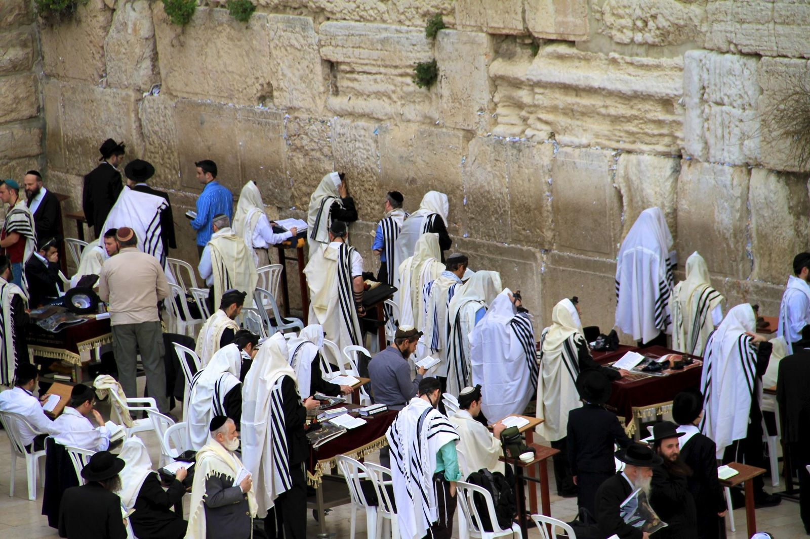
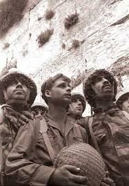
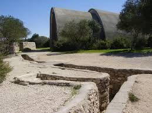
סיכום התקופות
| תקופה | אתרים | מה התייר רואה |
|---|---|---|
| יבוסים ודוד | עיר דוד | חפירות של ירושלים הקדומה |
| בית ראשון | נקבת השילוח, החומה הרחבה | הליכה במים במנהרה; שרידי ביצור |
| בית שני | הכותל, מנהרות הכותל, הבית השרוף; מחוץ לעיר: הרודיון | תפילה, חפירות, מייצג, ארמון הורדוס |
| רומאים וביזנטים | הקרדו, כנסיית הקבר, הנאה | רחוב עמודים וחנויות; צליינות |
| הכיבוש המוסלמי | כיפת הסלע, אל־אקצא | צליינות מוסלמית |
| צלבנים וממלוכים | סנט אנה, אבו גוש, הרמב״ן, שוק הכותנה, חאן אל־סולטן | כנסיות, בית כנסת, שווקים |
| עות'מאנים | החומות והשערים, מגדל דוד, משכנות שאננים, מאה שערים | טיילת החומות, מוזיאון, שכונות |
| המנדט | מלון המלך דוד, האוניברסיטה העברית, רוקפלר | מבנים היסטוריים, תצפיות, ארכיאולוגיה |
| העיר המחולקת | מוזיאון קו התפר | הסיפור של הגבול בעיר |
| מ־1967 | שער האריות, גבעת התחמושת, הרובע היהודי | מורשת קרב, הרובע המשוקם |
עצירה לתרגול · עונים בסטודיו
מושגים לבגרות · ההיסטוריה ממשיכה
ההיסטוריה של ירושלים לא נגמרה ב־1967. מלחמות, פיגועים ומתיחות משפיעים עד היום על התיירות אליה. כ־3 מכל 4 תיירים שמגיעים לישראל מבקרים בירושלים (לפי נתוני 2017), ולכן היא נפגעת ראשונה כשהם מפסיקים להגיע.
המספרים וההגדרות לפי רשימת "מושגים לבגרות 2026". נשאל בבגרות 2024: המצב הגיאופוליטי, השפעתו על התיירות הנכנסת, ואזהרת מסע והשפעתה על התיירות היוצאת.
מושגים לבגרות · התיירות ככלכלה
צליין מאיטליה מגיע לשבוע בירושלים. הוא משלם במלון, אצל מורה הדרך, במסעדה ובחנות המזכרות, ומשלם במטבע זר. חמשת המושגים הבאים מסבירים מה קורה לכסף הזה.
המספרים וההגדרות לפי רשימת "מושגים לבגרות 2026". "ייצוא סמוי" נשאל בבגרות 2024 ו־2025. "מכפיל תיירותי" (מכפיל ההכנסות) נשאל בבגרות 2025.
עצירה לתרגול · עונים בסטודיו
שאלות סיכום · בסגנון בגרות
לסיום
בנושא הבא: העיר העתיקה, ארבעת הרבעים והשערים.